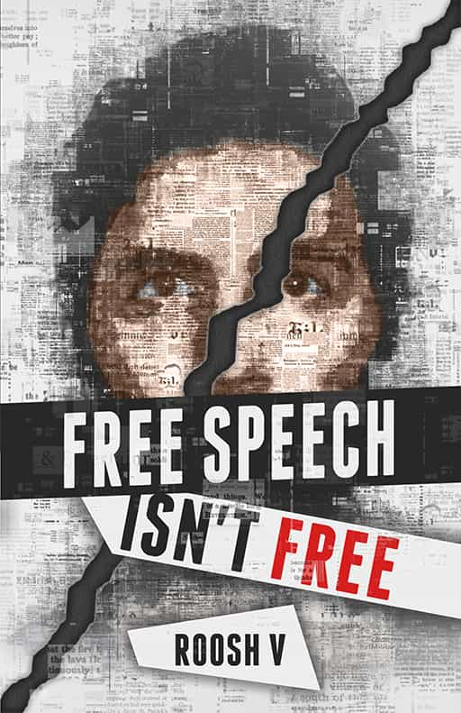

Daryush "Roosh" Valizadeh created ROK in October 2012. You can visit his blog at RooshV.com or follow him on Twitter and Facebook.


As I announced on my blog this morning, today I’m releasing my newest book, Free Speech Isn’t Free, which tells the inside story of being a target of censorship and violence at the hands of the media, political establishment, and social justice mob. The book is intended for men in the Western world who are concerned about the restriction of their rights. It gives them key knowledge of the cultural climate so they can better protect themselves against degenerate forces, and even fight back.

Free speech may be your right, but unless you fight for it, you’ll lose it. That is the message of Free Speech Isn’t Free, which chronicles how organizing a lecture tour for masculine men inserted Roosh Valizadeh into an unexpected free speech fight spanning several continents, putting both him and his family in danger from the globalist establishment and their mob of deranged social justice warriors.
After becoming activated by mass-scale media distortions and mayoral denouncements, the SJW mob in Canada rose up against Roosh and his followers to halt his tour. Roosh refused to cancel and set out to hold the lectures in secret.
He shares how he fought back against the mob while trying to come to terms with the globalist agenda that they’re controlled by. The well-informed men he met throughout the tour were critical in sharing hidden knowledge that put the agenda’s puzzle pieces into place.
Even after the lecture, when Roosh tried to conduct happy hour meetings for his followers, a bigger worldwide outrage befell him, leading to the doxing of his family and threats to burn their house to the ground. Free Speech Isn’t Free shares that story for the first time in a special epilogue, and what was going through the mind of a man who was the number one target for a 1984-inspired “two minutes of hate” that took place worldwide.
How far will you go if the establishment attacks you for what you believe in? Are you ready to defend yourself if they come after your reputation, your job, and your family? Free Speech Isn’t Free shows what one man did when powerful groups tried to silence him, along with everything he learned during the most momentous months of his life that will help others be able to identify and defend against attacks within their own lives.
Free Speech isn’t Free is a watershed work detailing the (mis)adventures of Roosh and his followers during his book tour of 2015 and the February 2016 RoK meet ups. Being a part of the forum during both of these events only revealed a quarter of what was going on to the man himself. Getting a glimpse of Roosh’s inner world during these harrowing events showed us that even under great stress and pressure, a strategic win is never impossible.
Unlike Roosh’s previous works that i’ve read (Bang & Day Bang), Free Speech isn’t Free departs from the older scientifically detached writing that we’re used to and changes into something that spoke from a more emotional place.
Being so close to these events made this a nail biter. Much to my shame I wasn’t able to attend, but now knowing what was going on in the background made me disappointed with myself for not being more focused during the war time measures. How can Roosh fight effectively if we’re all just being misfocused kittens over here?
The beginning took a bit of time to get into. It almost felt like the beginning of Bang with that familiar analytic approach. Once Reggie hit the scene, things started to get real. Roosh was no longer an internet blogger but a full on media sensation.
This fails to mention the spiritual journey we also find Roosh embarking on as he attempts to hold a private discussion with a few of his followers. I’m a casual reader of Roosh’s blog, but some of the things revealed in the book show a deeply spiritual man who has worked hard to learn about himself and seek the truth. In that quest, he found meaning in the strangest of places.
This story has the potential to be one of those books for a generation like The Diary of Anne Frank and The Catcher and the Rye that others in the future can read to get a cultural cross section of what life was like for men in the early part of the 21st century.
By far the strongest book Roosh has written to date. Highly recommended.
Bonus #1: An important new article explaining how to keep yourself safe from social justice attacks, especially by attackers who are already enmeshed in your social and professional circles.
Bonus #2: Full transcript of The State Of Man, the “dangerous” speech that initially created the hysterical censorship crusade. Here is a sample of what the speech contains:
Both of the above bonuses are embedded in the main book file.
Click one of the following three links to continue:
Free Speech Isn’t Free is my 18th book, and the first one that doesn’t have a sex scene, representing the general change in my writing over the past two years. The download package includes pdf, mobi, and epub files so you can read it on any device.
If you’re new to my work, I’m offering a bundle special where you can download all 18 of my books and two audiobooks for only $37.
Email me if you have a question or an issue with downloading. I thank everyone who supports this book and also to those men who came out to see the lectures last year and became a part of the story. The book could be my best yet, and I eagerly await your comments about it. I hope it helps masculine men who are beginning to find themselves a target of censorship and other types of attacks from the establishment.